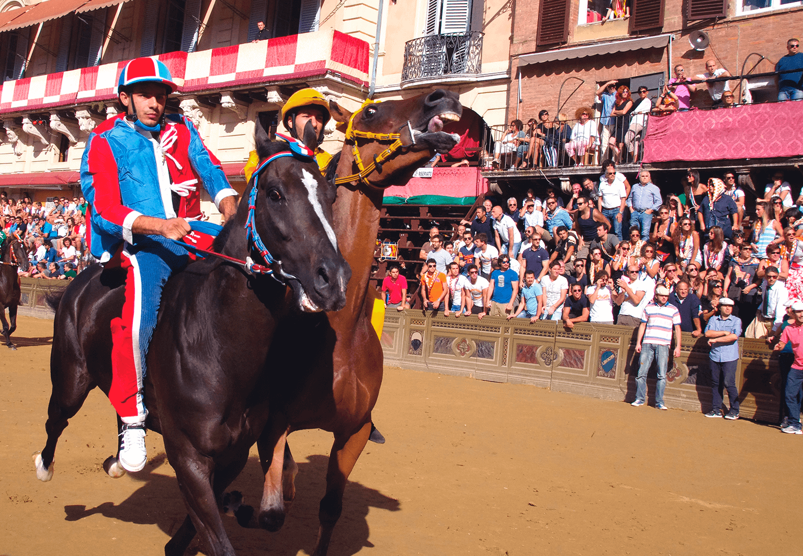
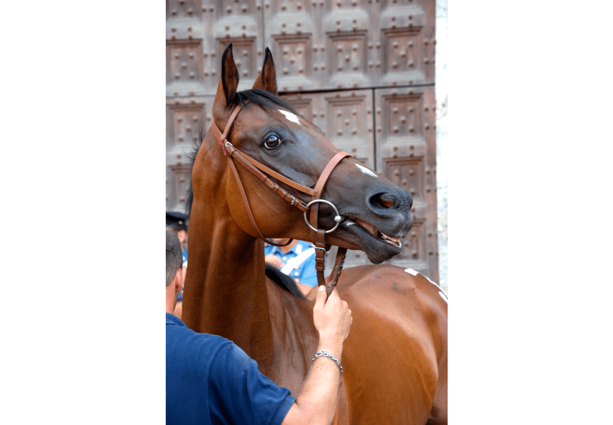
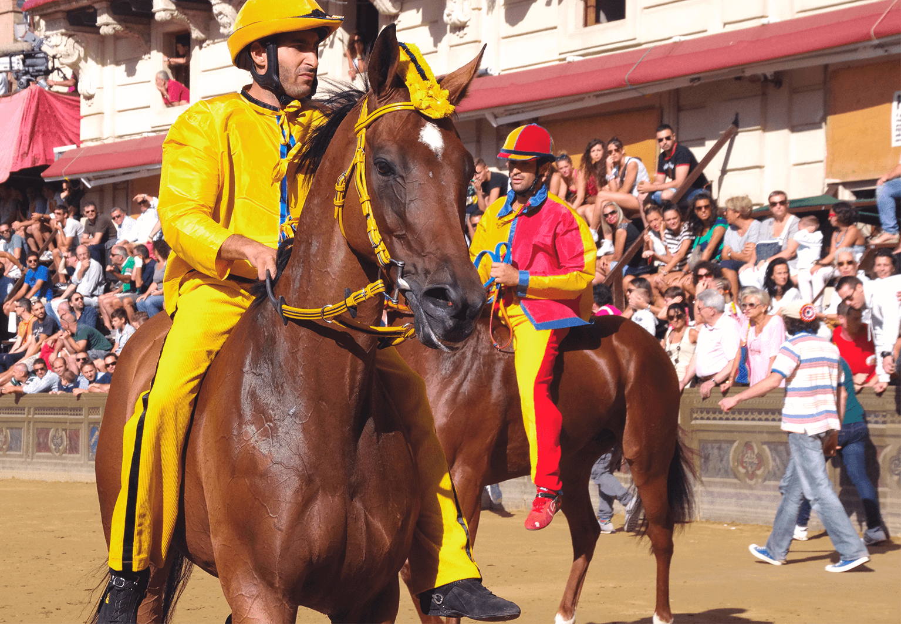
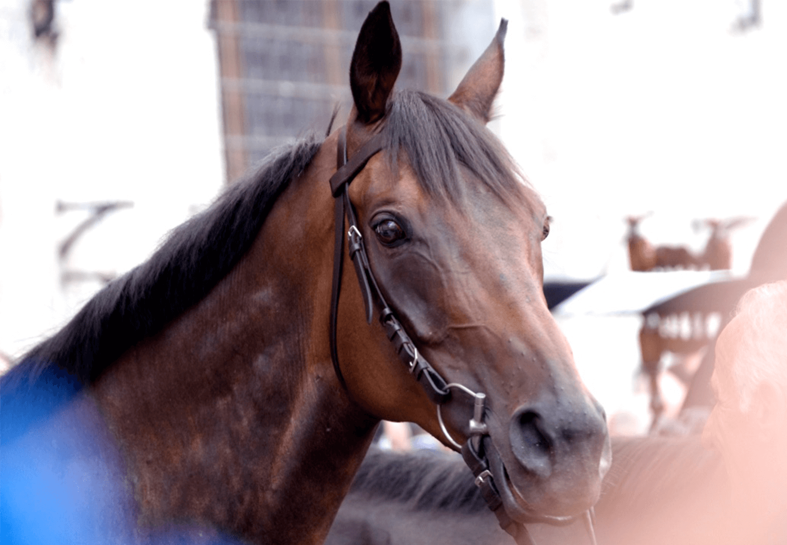
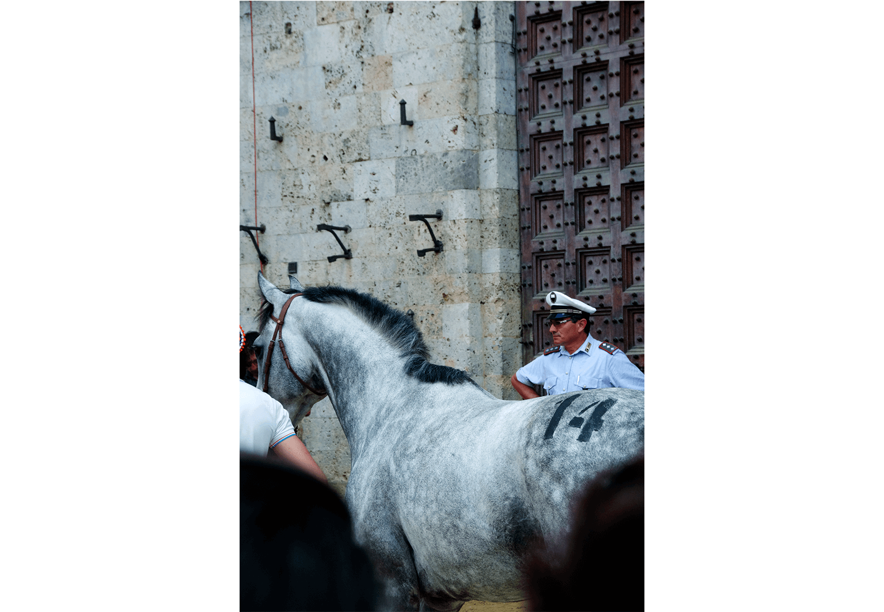

Palio di Siena
It is perhaps the most famous annual sporting event in Italy: The Palio of Siena. The Palio is much
more than a traditional bareback horse race (without saddle): it is a grandiose spectacle, a civic
act and the pride of Siena at stake. The race lasts, on average, only 75 seconds.
Organised in honour of the Virgin Mary, the race takes place twice a year, on 2 July and 16 August.
Ten of the seventeen contrade, or medieval quarters of the city, are represented by a horse and its
fantino (jockey) for each race. The seven contrade that did not take part in the last race in July
or August of the previous year automatically participate and three more are drawn at random (to make
10).





